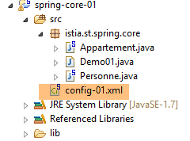
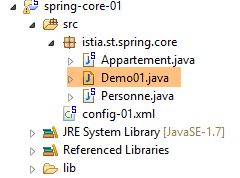
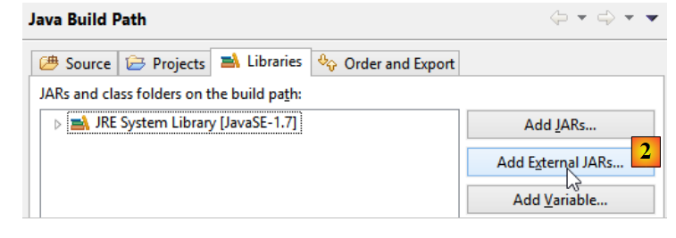
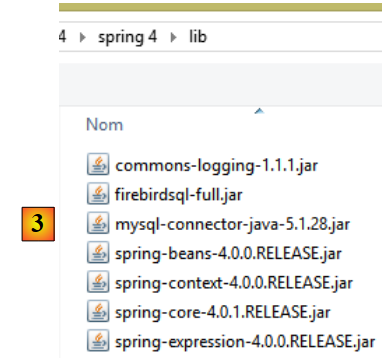
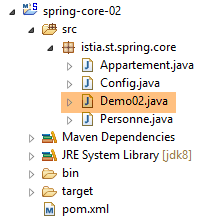
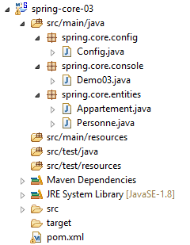
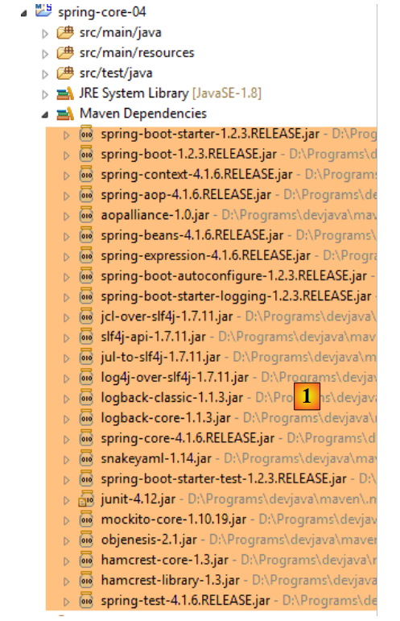
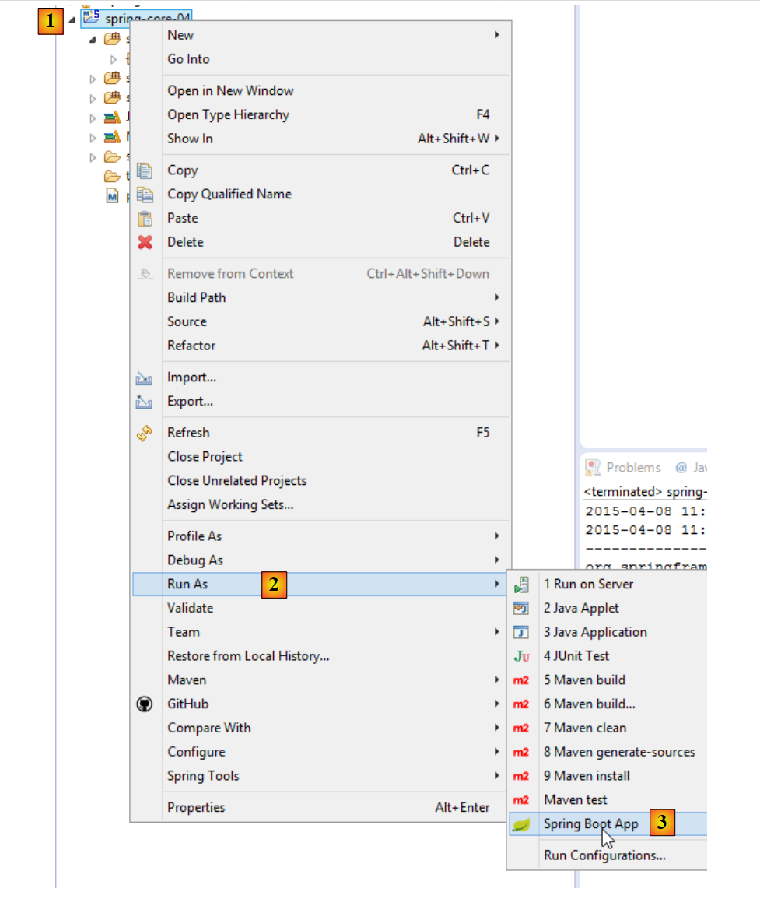

2. Introduction to the Spring Framework
Spring first appeared in 2004 as an object container. Since then, it has evolved into multiple branches: Spring MVC, Spring Data, Spring Batch, ... [http://spring.io]. In this chapter, we will focus solely on the object container. Here are a few key points:
- An application has multiple classes, and some of them share objects that must be unique (singletons). Spring creates and manages these singletons;
- Spring places these singletons in a structure called a context;
- classes access the application’s singletons by requesting them from Spring via their name, type, or both;
- Spring creates the singletons and manages any dependencies they may have: a singleton may indeed have references to one or more other singletons. When Spring creates a singleton, it also creates its dependencies;
- When a Spring-based application starts, it can ask Spring to create all the application’s singletons. These will then be available in the Spring context;
- Spring facilitates the use of layered architectures and interface-based programming. In simple cases, each layer is implemented by a singleton and implements an interface. If the application works with the layer interfaces rather than their implementation classes, this results in a scalable architecture that allows changing the implementation of one layer without affecting the others, thanks to the following two features:
- the application obtains a reference to the layer via its name. Spring provides it with a reference to the class implementing the layer;
- the application uses this reference as that of the layer’s interface and not as that of a class;
Singletons can be declared in three ways, which can be combined:
- within an XML file,
- in a special configuration class;
- with any class using annotations;
Below, we present three configuration examples:
- [example-01]: centralized configuration in a single XML file;
- [example-02]: configuration centralized in a single Java class;
- [example-03]: configuration distributed across multiple Java classes;
The last example [example-04] focuses on the Spring configuration of a layered architecture. This is the most important example. It will be used consistently to configure the architectures in this document.
These four examples lay the groundwork for what follows:
- Spring configuration and dependency injection;
- using Maven to manage a project’s dependencies;
- using JUnit to test projects;
2.1. Setting up the development environment
You must have:
- a JDK (Java Development Kit) installed (section 23.1);
- installed the Maven dependency manager (section 23.2);
- installed the Spring Tool Suite (STS) IDE (section 23.3);
- downloaded the code from the document [http://tahe.developpez.com/java/spring-database];
Import the runtime configurations from the [eclipse config] folder of the examples into STS. These configurations are particularly important. Some projects require passing arguments to the JVM in order to run, and this type of configuration is generally a headache. Additionally, this document uses Maven projects. When you encounter the warning:
Note: Press [Alt-F5] to regenerate all Maven projects.
It is strongly recommended that you follow this advice. Without this precaution, projects may display incomprehensible errors simply because the Maven dependencies between projects are incorrect.
 |
- In [1], right-click in [Package Explorer];
 |
- in [4a-4b-4c], select the [eclipse config / launch configurations] folder [4b] from the examples;
- In [5], select the available configurations. Select all of them;
- in [6], finish the wizard;
- In [7-8], view the imported run configurations;
 |
- In [8-9], uncheck [9] to display configurations for projects not loaded in STS. This is currently the case;
 |
- in [10], the Java applications, and in [11], the runtime configurations for the first three examples we will examine;
- in [12], the JUnit tests, and in [13], the run configuration for the fourth example in this section;
Now, create an Eclipse variable named [M2_REPO] that will specify the local Maven repository folder (see Section 23.2). This variable is used in several run configurations:
 |
We have assigned the value shown in [6] below to the variable [M2_REPO]:
 |
Now, import the four examples from the [spring-core] folder:
 |
- In [1], right-click in [Package Explorer];
 |
- in [4a-4b], select the [spring-core] folder containing the examples;
- in [5], select all projects in the folder and click [Finish];
- in [6], the four projects in [Package Explorer];
2.2. Example-01
2.2.1. The Eclipse Project
 |
2.2.2. The [Person] class
 |
package istia.st.spring.core;
public class Personne {
// fields
private String nom;
private String prenom;
private int age;
// manufacturers
public Personne() {
}
public Personne(String nom, String prénom, int âge) {
this.nom = nom;
this.prenom = prénom;
this.age = âge;
}
// toString
public String toString() {
return String.format("Personne[%s, %s,%d]", prenom, nom, age);
}
// getters and setters
public String getNom() {
return nom;
}
public void setNom(String nom) {
this.nom = nom;
}
public String getPrenom() {
return prenom;
}
public void setPrenom(String prenom) {
this.prenom = prenom;
}
public int getAge() {
return age;
}
public void setAge(int age) {
this.age = age;
}
}
Note: getters and setters can be generated automatically as follows [1-2]:
 |
2.2.3. The [Apartment] class
 |
package istia.st.spring.core;
public class Appartement {
// fields
private Personne proprietaire;
private int surface;
// getters and setters
public Personne getProprietaire() {
return proprietaire;
}
public void setProprietaire(Personne proprietaire) {
this.proprietaire = proprietaire;
}
public int getSurface() {
return surface;
}
public void setSurface(int surface) {
this.surface = surface;
}
// toString
public String toString() {
return String.format("Appartement[%s, %s]", proprietaire, surface);
}
}
Note: This class does not have an explicit constructor. In this case, the default constructor with no parameters—which does nothing—always exists. When you create constructors, this default constructor no longer exists implicitly. You must then define it explicitly:
2.2.4. The Spring configuration file
 |
<?xml version="1.0" encoding="UTF-8"?>
<beans xmlns="http://www.springframework.org/schema/beans" xmlns:xsi="http://www.w3.org/2001/XMLSchema-instance" xmlns:util="http://www.springframework.org/schema/util"
xsi:schemaLocation="http://www.springframework.org/schema/beans http://www.springframework.org/schema/beans/spring-beans-4.0.xsd
http://www.springframework.org/schema/util http://www.springframework.org/schema/util/spring-util-4.0.xsd">
<!-- Person 01 -->
<bean id="personne_01" class="istia.st.spring.core.Personne">
<constructor-arg index="0" value="dubois" />
<constructor-arg index="1" value="paul" />
<constructor-arg index="2" value="34" />
</bean>
<!-- Person 02 -->
<bean id="personne_02" class="istia.st.spring.core.Personne">
<property name="nom" value="martin" />
<property name="prenom" value="micheline" />
<property name="age" value="18" />
</bean>
<!-- a list of people -->
<util:list id="club">
<ref bean="personne_01" />
<ref bean="personne_02" />
</util:list>
<!-- an apartment -->
<bean id="appartement" class="istia.st.spring.core.Appartement">
<property name="surface" value="100" />
<property name="proprietaire" ref="personne_01" />
</bean>
</beans>
- lines 2, 27: singletons are defined within a <beans> tag;
- lines 6–10: each singleton is defined by a <bean> tag;
- line 6: [id] is the singleton’s identifier. [class] is the full name of the class to be instantiated;
- lines 7–9: the three values to pass to the constructor of the [Person] class;
- lines 12–16: the [Person] class is first created using its default constructor [new Person()]. Then, for each [property] tag, a setter method of the class is used. For example, on line 13, the [setName("martin")] method will be executed. The [setName] method must therefore exist. This is an important point to remember;
- lines 18–21: the <util:list> tag is used to define a singleton that is a list;
- line 19: refers to the singleton [person_01] defined on line 6. This is what is known as dependency injection. Two attributes can be used to initialize a singleton’s field:
- [value]: to assign a primitive value (string, number, date, etc.) to the field,
- [ref]: to assign the reference of a Spring object to the field;
Note: The Spring configuration file can be generated as follows [1-4]:
 |
2.2.5. The executable class
 |
package istia.st.spring.core;
import java.util.ArrayList;
import java.util.List;
import org.springframework.context.ApplicationContext;
import org.springframework.context.support.ClassPathXmlApplicationContext;
public class Demo01 {
@SuppressWarnings({ "unchecked", "resource" })
public static void main(String[] args) {
// spring context retrieval
ApplicationContext ctx = new ClassPathXmlApplicationContext("config-01.xml");
// beans are recovered
Personne p01 = ctx.getBean("personne_01", Personne.class);
Personne p02 = ctx.getBean("personne_02", Personne.class);
List<Personne> club = ctx.getBean("club", new ArrayList<Personne>().getClass());
Appartement appart01 = ctx.getBean(Appartement.class);
// we display them
System.out.println("personnes--------");
System.out.println(p01);
System.out.println(p02);
System.out.println("club--------");
for (Personne p : club) {
System.out.println(p);
}
System.out.println("appartement--------");
System.out.println(appart01);
// recovered beans are singletons
// they can be requested several times, but the same bean is always retrieved
Personne p01b = ctx.getBean("personne_01", Personne.class);
System.out.println(String.format("beans [p01,p01b] identiques ? %s", p01b == p01));
}
}
- line 14: creates the Spring context. All singletons defined in the [config-01.xml] file are then instantiated;
- line 16: requests a reference to the singleton identified by [person_01] of type [Person]. This second parameter is optional, but if omitted, a reference of type [Object] is returned, which must then be cast to type [Person];
- line 19: we do not use the bean’s name but only its type, since there is only one singleton of type [Apartment];
- line 18: both the identifier and the type of the desired singleton are used. The identifier is redundant since there is only one singleton of type [new ArrayList<Person>().getClass()];
- Lines 32–33: show that if we request the same singleton multiple times, we always get the same reference, thereby demonstrating that we are indeed dealing with a singleton. This point is important to understand;
Note: An executable class can be generated as follows [1-6]:
 |
 |
- Checking [6] ensures that the generated class will contain a static method [main], making it executable;
2.2.6. Project dependencies
 |
- Spring dependencies: [spring-core, spring-beans, spring-context, spring-expression, commons-logging];
Dependencies are added to the project as follows:
 |
- in [1]: right-click on the project / [Build Path] / [Configure Build Path];
 |
- in [2]: [Add JARs] if the JARs to be added are in a project folder. Otherwise, [Add External JARs];
 |
- in [3], select the JARs to add to the project's ClassPath (here, they are in the [lib] folder within the project);
Definition: A project's [ClassPath] is the set of directories that the JVM (Java Virtual Machine) running the project searches to find a class referenced by the project. For an Eclipse project, the [ClassPath] consists of the following:
- the project's [bin] folder;
- the elements of the project's [Build Path];
The [bin] folder is the folder produced by compiling the [src] folder. Therefore, everything placed in the [src] folder is automatically part of the [ClassPath] (even if it is not a .java file). Thus, in the previous project, the Spring configuration file [config-01.xml], which is in the [src] folder, will be part of the project’s [ClassPath] at runtime.
2.2.7. Results
févr. 21, 2014 1:16:23 PM org.springframework.context.support.AbstractApplicationContext prepareRefresh
Infos: Refreshing org.springframework.context.support.ClassPathXmlApplicationContext@3ac67f69: startup date [Fri Feb 21 13:16:23 CET 2014]; root of context hierarchy
févr. 21, 2014 1:16:23 PM org.springframework.beans.factory.xml.XmlBeanDefinitionReader loadBeanDefinitions
Infos: Loading XML bean definitions from class path resource [config-01.xml]
personnes--------
Personne[paul, dubois,34]
Personne[micheline, martin,18]
club--------
Personne[paul, dubois,34]
Personne[micheline, martin,18]
appartement--------
Appartement[Personne[paul, dubois,34], 100]
beans [p01,p01b] identiques ? true
2.3. Example-02
2.3.1. The Eclipse Project
 |
2.3.2. The Spring configuration class
package istia.st.spring.core;
import java.util.ArrayList;
import java.util.List;
import org.springframework.context.annotation.Bean;
import org.springframework.context.annotation.Configuration;
@Configuration
public class Config {
@Bean
public Personne personne_01() {
return new Personne("Paul", "Dubois", 34);
}
@Bean
public Personne personne_02() {
return new Personne("Martin", "Micheline", 18);
}
@Bean
public List<Personne> club(Personne personne_01, Personne personne_02) {
List<Personne> personnes = new ArrayList<Personne>();
personnes.add(personne_01);
personnes.add(personne_02);
return personnes;
}
@Bean
public Appartement appartement(Personne personne_01) {
Appartement appartement = new Appartement();
appartement.setSurface(200);
appartement.setPropriétaire(personne_01);
return appartement;
}
}
- line 9: the [@Configuration] annotation is a Spring annotation. It indicates that the annotated class defines singletons. These are defined using the [@Bean] annotation. Spring will execute all methods annotated with [@Bean]. These create the application’s singletons;
- lines 12–15: defines a singleton identified by [person_01], i.e., the method name.
- line 23: the parameters [person_01, person_02] bear the names of singletons. Spring will automatically initialize them with the references of these singletons. This is referred to as parameter injection;
This way of configuring singletons is more explicit than the one using the XML file. In fact, we are reproducing ourselves what Spring did implicitly based on the XML file.
2.3.3. The executable class
 |
package istia.st.spring.core;
import java.util.ArrayList;
import java.util.List;
import org.springframework.context.annotation.AnnotationConfigApplicationContext;
public class Demo02 {
@SuppressWarnings({ "unchecked", "resource" })
public static void main(String[] args) {
// spring context retrieval
AnnotationConfigApplicationContext ctx = new AnnotationConfigApplicationContext(Config.class);
// beans are recovered
Personne p01 = ctx.getBean("personne_01", Personne.class);
Personne p02 = ctx.getBean("personne_02", Personne.class);
List<Personne> club = ctx.getBean("club", new ArrayList<Personne>().getClass());
Appartement appart01 = ctx.getBean(Appartement.class);
// we display them
System.out.println("personnes--------");
System.out.println(p01);
System.out.println(p02);
System.out.println("club--------");
for (Personne p : club) {
System.out.println(p);
}
System.out.println("appartement--------");
System.out.println(appart01);
// recovered beans are singletons
// they can be requested several times, but the same bean is always retrieved
Personne p01b = ctx.getBean("personne_01", Personne.class);
System.out.println(String.format("beans [p01,p01b] identiques ? %s", p01b == p01));
}
}
- Line 13 causes all beans defined in the [Config] class to be instantiated;
- the rest of the code remains unchanged;
2.3.4. Project dependencies
 |  |
The dependencies are defined by the following [pom.xml] file:
<project xmlns="http://maven.apache.org/POM/4.0.0" xmlns:xsi="http://www.w3.org/2001/XMLSchema-instance"
xsi:schemaLocation="http://maven.apache.org/POM/4.0.0 http://maven.apache.org/xsd/maven-4.0.0.xsd">
<modelVersion>4.0.0</modelVersion>
<groupId>istia.st.spring.core</groupId>
<artifactId>spring-core-02</artifactId>
<version>0.0.1-SNAPSHOT</version>
<name>spring-core-02</name>
<description>Introduction à Spring</description>
<properties>
<project.build.sourceEncoding>UTF-8</project.build.sourceEncoding>
<java.version>1.7</java.version>
</properties>
<dependencies>
<!-- Spring -->
<dependency>
<groupId>org.springframework</groupId>
<artifactId>spring-context</artifactId>
<version>4.1.3.RELEASE</version>
</dependency>
</dependencies>
<!-- plugins -->
<build>
<plugins>
<plugin>
<artifactId>maven-assembly-plugin</artifactId>
<configuration>
<descriptorRefs>
<descriptorRef>jar-with-dependencies</descriptorRef>
</descriptorRefs>
</configuration>
</plugin>
<plugin>
<groupId>org.apache.maven.plugins</groupId>
<artifactId>maven-surefire-plugin</artifactId>
<version>2.18.1</version>
</plugin>
</plugins>
</build>
</project>
Manually managing a project’s dependencies becomes a headache when using Java libraries whose dependencies are unknown. For example, the [Hibernate] framework, which manages database access, has dozens of dependencies. The [Maven] project solves this problem. You specify the dependency you need. It is automatically searched for in Maven repositories distributed across the internet. If the requested dependency has dependencies of its own, those are automatically downloaded as well. These downloaded dependencies are stored in a local repository on the machine. If another application later needs the same dependency, it will not be downloaded but retrieved from the local repository. A dependency is characterized by the following elements:
- line 17: a <dependency> tag;
- line 18: a [groupId] attribute that generally identifies the company that created the dependency;
- line 19: an [artifactId] attribute that identifies the dependency;
- line 20: a [version] attribute that identifies the desired version;
The project generation will itself produce a Maven component defined by lines 4–8:
- lines 4–6: the [groupId, artifactId, version] attributes we just described;
- lines 7–8: are optional attributes;
We will return to the role of lines 24–40 a little later. To convert a standard Eclipse project into a Maven project, you need to do two things:
- create the [pom.xml] file shown above;
- declare that the project is now a Maven project [1-4]:
 |
The icon for a Maven project features an M [4]. The S indicates that the project contains Spring components. It is not recommended to convert (as we just did) an Eclipse project into a Maven project, as the project will then lack the expected structure for a Maven project, which can sometimes lead to unexpected issues.
2.3.5. Generating the project’s Maven artifact
We refer to the element defined by lines 4–6 of the [pom.xml] file as the project’s Maven artifact:
<groupId>istia.st.spring.core</groupId>
<artifactId>spring-core-02</artifactId>
<version>0.0.1-SNAPSHOT</version>
To generate this artifact, the following lines 3–7 must be present in the [pom.xml] file:
<build>
<plugins>
<plugin>
<groupId>org.apache.maven.plugins</groupId>
<artifactId>maven-surefire-plugin</artifactId>
<version>2.18.1</version>
</plugin>
</plugins>
</build>
These define the Maven plugin capable of generating the project artifact. We then proceed as follows:
 |
The artifact generated in this way goes into the local Maven repository. Its location can be found in the Eclipse configuration:
 |
You can then verify that the Maven artifact has been installed correctly:
 |
From now on, another local Maven project can use this archive.
2.4. Example-03
2.4.1. The Eclipse Project
This time, we will create a Maven project [1-8]:
 |
 |
- in [3b]: specify an empty folder where the project will be generated;
 |
- in [4]: the identifier of the Maven group to which the project will belong;
- in [5]: the name of the Maven artifact produced:
- in [6]: its version;
- in [7]: its packaging type (other options include war, ear, apk, etc.);
- in [8]: the project thus created;
By default, a Maven project has a specific directory structure:
- [src/main/java]: the project's source code. The compiled output from these sources will be placed in the project's [target/classes] folder;
- [src/main/resources]: resources that must be in the project's classpath but are not Java source files. They will be copied as-is to the project's [target/classes] folder;
- [src/test/java]: the source code for the project's tests. The compiled output from these sources will go into the project's [target/test-classes] folder. These elements are not included in the project's Maven archive;
- [src / test / resources]: resources that must be in the project's classpath for testing but are not Java source files. They will be copied as-is to the project's [target/test-classes] folder;
We complete the project as follows:
 |
2.4.2. The Maven configuration
A [pom.xml] file is generated by default. We modify it as follows:
<project xmlns="http://maven.apache.org/POM/4.0.0" xmlns:xsi="http://www.w3.org/2001/XMLSchema-instance"
xsi:schemaLocation="http://maven.apache.org/POM/4.0.0 http://maven.apache.org/xsd/maven-4.0.0.xsd">
<modelVersion>4.0.0</modelVersion>
<groupId>istia.st.spring.core</groupId>
<artifactId>spring-core-03</artifactId>
<version>0.0.1-SNAPSHOT</version>
<name>spring-core-03</name>
<description>Introduction à Spring</description>
<properties>
<project.build.sourceEncoding>UTF-8</project.build.sourceEncoding>
<java.version>1.8</java.version>
</properties>
<!-- maven parent project -->
<parent>
<groupId>org.springframework.boot</groupId>
<artifactId>spring-boot-starter-parent</artifactId>
<version>1.2.3.RELEASE</version>
</parent>
<dependencies>
<!-- Spring Context -->
<dependency>
<groupId>org.springframework</groupId>
<artifactId>spring-context</artifactId>
</dependency>
<!-- logs -->
<dependency>
<groupId>org.springframework.boot</groupId>
<artifactId>spring-boot-starter-logging</artifactId>
</dependency>
</dependencies>
<!-- plugins -->
<build>
<plugins>
<!-- to generate the project archive with its dependencies -->
<plugin>
<artifactId>maven-assembly-plugin</artifactId>
<configuration>
<descriptorRefs>
<descriptorRef>jar-with-dependencies</descriptorRef>
</descriptorRefs>
</configuration>
</plugin>
<!-- to install the project artifact in the local Maven repository -->
<plugin>
<groupId>org.apache.maven.plugins</groupId>
<artifactId>maven-surefire-plugin</artifactId>
<version>2.18.1</version>
</plugin>
</plugins>
</build>
</project>
- line 11: the project is encoded in UTF-8;
- line 12: JDK 1.8 is used to compile the project;
- lines 16–20: for projects using Spring libraries, it is convenient to use a parent Maven project called [spring-boot-starter-parent]. This defines the versions of various Spring libraries as well as those of their dependencies. This eliminates the need to define them in the dependencies section. Thus, in lines 24–27, we do not specify the desired version of [spring-context]. It will be the one defined by the parent project [spring-boot-starter-parent]. This technique eliminates the need to worry about potential version incompatibilities between dependencies. Those defined by the parent project are compatible with one another;
- lines 29–32: Spring writes a significant amount of information to the console via a logging library. This library is imported here;
- lines 40–47: a Maven plugin, which we will discuss later;
- lines 50–52: the plugin for generating the project’s Maven artifact;
2.4.3. The Spring configuration class
 |
The [Config] class is as follows:
package istia.st.spring.core.config;
import istia.st.spring.core.entities.Personne;
import java.util.ArrayList;
import java.util.List;
import org.springframework.context.annotation.Bean;
import org.springframework.context.annotation.ComponentScan;
import org.springframework.context.annotation.Configuration;
@Configuration
@ComponentScan({ "spring.core.entities" })
public class Config {
@Bean
public Personne personne_01() {
return new Personne("Paul", "Dubois", 34);
}
@Bean
public Personne personne_02() {
return new Personne("Martin", "Micheline", 18);
}
@Bean
public List<Personne> club(Personne personne_01, Personne personne_02) {
List<Personne> personnes = new ArrayList<Personne>();
personnes.add(personne_01);
personnes.add(personne_02);
return personnes;
}
@Bean
public int mySurface() {
return 200;
}
}
- Here we see the previously commented code with two new additions:
2.4.4. The [Apartment] class
 |
package spring.core.entities;
import org.springframework.beans.factory.annotation.Autowired;
import org.springframework.beans.factory.annotation.Qualifier;
import org.springframework.stereotype.Component;
@Component
public class Appartement {
// fields injected by Spring
@Autowired
@Qualifier("personne_01")
private Personne propriétaire;
@Autowired
@Qualifier("mySurface")
private int surface;
// getters and setters
public Personne getPropriétaire() {
return propriétaire;
}
public void setPropriétaire(Personne propriétaire) {
this.propriétaire = propriétaire;
}
public int getSurface() {
return surface;
}
public void setSurface(int surface) {
this.surface = surface;
}
// toString
public String toString() {
return String.format("Appartement[%s, %s]", propriétaire, surface);
}
}
- line 7: the [@Component] annotation tells Spring that the class is a singleton that the framework must instantiate and manage. This singleton will be found because we wrote [@ComponentScan({ "istia.st.spring.core.entities" })] in the [Config] class;
- line 11: asks Spring to inject the reference of one of the singletons into the field. This can be defined in two ways:
2.4.5. Running the project
Running the project produces the following output in the console:
- Lines 1-3: Spring generates a very large number of logs, several dozen lines. These logs can be very useful for debugging a project that isn't working. When it is working, you can reduce the logs as follows:
 |
In the [src/main/resources] folder, create the following [logback.xml] file:
<configuration>
<appender name="STDOUT" class="ch.qos.logback.core.ConsoleAppender">
<!-- encoders are by default assigned the type
ch.qos.logback.classic.encoder.PatternLayoutEncoder -->
<encoder>
<pattern>%d{HH:mm:ss.SSS} [%thread] %-5level %logger{36} - %msg%n</pattern>
</encoder>
</appender>
<!-- log level control -->
<root level="info"> <!-- info, debug, warn -->
<appender-ref ref="STDOUT" />
</root>
</configuration>
- Line 12 sets the log level. [debug] is a very detailed level, [info] much less so;
Here are the results with [level=info]:
There is now only one line of logs.
2.4.6. Generating the project archive with its dependencies
The archive created in the previous project can also be used by a non-Maven Eclipse project. Some projects use many libraries, and it can be tricky not to forget any. This is where Maven works wonders, as you only need to name the top-level dependency for the lower-level ones to be automatically added to the project’s Classpath. When a non-Maven Eclipse project needs to use the archives from a Maven project, it is possible to generate the artifact of the latter with all its dependencies (which was not the case in the previous project). For this generation, the following lines 3–10 must be present in the [pom.xml] file:
<build>
<plugins>
<plugin>
<artifactId>maven-assembly-plugin</artifactId>
<configuration>
<descriptorRefs>
<descriptorRef>jar-with-dependencies</descriptorRef>
</descriptorRefs>
</configuration>
</plugin>
<plugin>
<groupId>org.apache.maven.plugins</groupId>
<artifactId>maven-surefire-plugin</artifactId>
<version>2.18.1</version>
</plugin>
</plugins>
</build>
These define the Maven plugin capable of generating the project artifact along with its dependencies. Next, proceed as follows [1-6]:
 |
 |
- [4-6] represent a Maven build configuration;
- in [4], enter any name;
- in [5], specify the project folder;
- in [6], enter the Maven goals:
- [clean]: the project’s [target] folder is deleted;
- [compile]: the project is compiled. The compilation outputs are placed in a regenerated [target] folder;
- [assembly:single]: the classes of the project and its dependencies are placed in a single JAR archive in the [target] folder;
After execution, the following result is obtained:
 |
A JAR archive is a zipped file that can be opened with an unzipper. Once the previous archive is unzipped, the following directory structure is obtained:
2.5. Example-04
2.5.1. Objective
This example is based on one presented in the document [Introduction to Spring IoC], which demonstrates Spring’s contribution to configuring multi-layer architectures. In the original document, the example uses a Spring configuration defined in an XML file. Here, we implement the example using a configuration based on Java classes and annotations.
Here, we want to configure a Spring project for the following architecture:
 |
Each layer has an interface implemented by two classes. We want to demonstrate that, thanks to Spring, we can change the implementation of a layer with zero impact on the code of the other layers.
2.5.2. The Eclipse Project
2.5.2.1. Generation
We create a new project type:
 |
 |
- in [4], enter the name of the Eclipse project;
- in [5], select a Maven project;
- in [6], select a Java version >=1.7;
- in [7], select the suggested Spring Boot version;
- the information in [8-11] is Maven information;
- in [12], you can select one or more of the suggested dependencies. This will add a number of dependencies to the Maven [pom.xml] file;
 |
- In [13], select an existing, empty folder to host the project;
- in [14], the generated project. We will break down its components;
The project is a Maven project configured by the following [pom.xml] file:
<?xml version="1.0" encoding="UTF-8"?>
<project xmlns="http://maven.apache.org/POM/4.0.0" xmlns:xsi="http://www.w3.org/2001/XMLSchema-instance"
xsi:schemaLocation="http://maven.apache.org/POM/4.0.0 http://maven.apache.org/xsd/maven-4.0.0.xsd">
<modelVersion>4.0.0</modelVersion>
<groupId>istia.st.spring.core</groupId>
<artifactId>spring-core-04</artifactId>
<version>0.0.1-SNAPSHOT</version>
<packaging>jar</packaging>
<name>spring-core-04</name>
<description>Programmation par interfaces</description>
<parent>
<groupId>org.springframework.boot</groupId>
<artifactId>spring-boot-starter-parent</artifactId>
<version>1.2.3.RELEASE</version>
<relativePath/> <!-- lookup parent from repository -->
</parent>
<properties>
<project.build.sourceEncoding>UTF-8</project.build.sourceEncoding>
<start-class>demo.SpringCore04Application</start-class>
<java.version>1.8</java.version>
</properties>
<dependencies>
<dependency>
<groupId>org.springframework.boot</groupId>
<artifactId>spring-boot-starter</artifactId>
</dependency>
<dependency>
<groupId>org.springframework.boot</groupId>
<artifactId>spring-boot-starter-test</artifactId>
<scope>test</scope>
</dependency>
</dependencies>
<build>
<plugins>
<plugin>
<groupId>org.springframework.boot</groupId>
<artifactId>spring-boot-maven-plugin</artifactId>
</plugin>
</plugins>
</build>
</project>
- lines 6–12: contain the information entered in the project creation wizard;
- lines 14–19: the parent Maven project, which defines a number of libraries along with their versions. If any of them are project dependencies, they are listed in the [pom.xml] file without their versions;
- line 23: this line is only used if you intend to generate an executable archive of the project. Otherwise, it is unused;
- lines 28–31: the minimal dependencies for a Spring Boot project. Note that we did not select any dependencies from the checkbox list;
- Lines 33–37: The dependency required to manage JUnit unit tests [http://junit.org/] integrated with Spring. Line 36 indicates that the dependency is required only for testing. Consequently, it will not be included in the project archive;
- lines 42–45: the plugin that generates the project’s Maven artifact;
The list of dependencies provided by this file is as follows [1]:
 |
We will see that these are sufficient for what we want to do here.
2.5.2.2. The executable class
 |
The executable class [SpringCore04Application] [[2] is as follows:
package demo;
import org.springframework.boot.SpringApplication;
import org.springframework.boot.autoconfigure.SpringBootApplication;
@SpringBootApplication
public class SpringCore04Application {
public static void main(String[] args) {
SpringApplication.run(SpringCore04Application.class, args);
}
}
- Line 6: The [@SpringBootApplication] annotation is a shorthand for the three annotations [@Configuration, @EnableAutoConfiguration, @ComponentScan], which means:
- that the [SpringCore04Application] class is a Spring configuration class;
- that Spring Boot is instructed to perform configurations based on the classes it finds in the project’s classpath, which in this case are the Maven dependencies;
- to examine the current directory (that of the [SpringCore04Application] class) to find any other Spring components;
- line 10: the static method [SpringApplication.run] is executed. Its first parameter is a Spring configuration class, here the [SpringCore04Application] class. Its second parameter is the list of arguments passed to the [main] method (line 9). The static method [SpringApplication.run] is responsible for creating the Spring context, i.e., creating the various beans found either in the configuration classes or in the directories scanned by the [@ComponentScan] annotation. The [main] method here does nothing else. To give it a little more substance, we will modify it as follows:
package demo;
import org.springframework.boot.SpringApplication;
import org.springframework.boot.autoconfigure.SpringBootApplication;
import org.springframework.context.ConfigurableApplicationContext;
@SpringBootApplication
public class SpringCore04Application {
public static void main(String[] args) {
// spring context instantiation
ConfigurableApplicationContext context = SpringApplication.run(SpringCore04Application.class, args);
// context display
System.out.println("---------------- Liste des beans Spring");
for (String beanName : context.getBeanDefinitionNames()) {
System.out.println(beanName);
}
// closing context
context.close();
}
}
- line 12: the static method [SpringApplication.run] returns the Spring context it has constructed;
- lines 15–17: the names of all beans in this context are displayed;
The application can be run as follows [1-3]. The standard method [Run As Java Application] is also valid.
 |
The following result is obtained:
. ____ _ __ _ _
/\\ / ___'_ __ _ _(_)_ __ __ _ \ \ \ \
( ( )\___ | '_ | '_| | '_ \/ _` | \ \ \ \
\\/ ___)| |_)| | | | | || (_| | ) ) ) )
' |____| .__|_| |_|_| |_\__, | / / / /
=========|_|==============|___/=/_/_/_/
:: Spring Boot :: (v1.2.3.RELEASE)
2015-04-08 11:18:38.254 INFO 4796 --- [ main] demo.SpringCore04Application : Starting SpringCore04Application on Gportpers3 with PID 4796 (D:\data\istia-1415\polys\istia\dvp-spring-database\codes\original\intro-spring-core\spring-core-04\target\classes started by ST in D:\data\istia-1415\polys\istia\dvp-spring-database\codes\original\intro-spring-core\spring-core-04)
2015-04-08 11:18:38.295 INFO 4796 --- [ main] s.c.a.AnnotationConfigApplicationContext : Refreshing org.springframework.context.annotation.AnnotationConfigApplicationContext@64485a47: startup date [Wed Apr 08 11:18:38 CEST 2015]; root of context hierarchy
2015-04-08 11:18:38.776 INFO 4796 --- [ main] o.s.j.e.a.AnnotationMBeanExporter : Registering beans for JMX exposure on startup
2015-04-08 11:18:38.788 INFO 4796 --- [ main] demo.SpringCore04Application : Started SpringCore04Application in 0.773 seconds (JVM running for 1.335)
---------------- Liste des beans Spring
org.springframework.context.annotation.internalConfigurationAnnotationProcessor
org.springframework.context.annotation.internalAutowiredAnnotationProcessor
org.springframework.context.annotation.internalRequiredAnnotationProcessor
org.springframework.context.annotation.internalCommonAnnotationProcessor
springCore04Application
org.springframework.context.annotation.ConfigurationClassPostProcessor.importAwareProcessor
org.springframework.context.annotation.ConfigurationClassPostProcessor.enhancedConfigurationProcessor
org.springframework.boot.autoconfigure.AutoConfigurationPackages
org.springframework.boot.autoconfigure.PropertyPlaceholderAutoConfiguration
org.springframework.boot.autoconfigure.condition.BeanTypeRegistry
propertySourcesPlaceholderConfigurer
org.springframework.boot.autoconfigure.jmx.JmxAutoConfiguration
mbeanExporter
objectNamingStrategy
mbeanServer
2015-04-08 11:18:38.789 INFO 4796 --- [ main] s.c.a.AnnotationConfigApplicationContext : Closing org.springframework.context.annotation.AnnotationConfigApplicationContext@64485a47: startup date [Wed Apr 08 11:18:38 CEST 2015]; root of context hierarchy
2015-04-08 11:18:38.790 INFO 4796 --- [ main] o.s.j.e.a.AnnotationMBeanExporter : Unregistering JMX-exposed beans on shutdown
- lines 14–28: beans from the Spring context. We do not know their role. We find the bean [springCore04Application] on line 18, which, due to its [@SpringBootApplication] annotation, automatically becomes a Spring bean;
- the other lines are Spring logs at the [INFO] level. As we have already seen, these logs can be controlled by the [logback.xml] file placed in the project’s classpath:
 |
<configuration>
<appender name="STDOUT" class="ch.qos.logback.core.ConsoleAppender">
<!-- encoders are by default assigned the type
ch.qos.logback.classic.encoder.PatternLayoutEncoder -->
<encoder>
<pattern>%d{HH:mm:ss.SSS} [%thread] %-5level %logger{36} - %msg%n</pattern>
</encoder>
</appender>
<!-- log level control -->
<root level="warn"> <!-- info, debug, warn -->
<appender-ref ref="STDOUT" />
</root>
</configuration>
If, on line 12 above, we set the level to [warn] instead of [info], we get the following result:
The logs have disappeared. Only [warn] level messages appear, and there were none here.
2.5.3. Implementation of the different layers of the architecture
 |
We will now implement the three layers of the architecture above:
 |
The [DAO] layer is implemented by the [spring.core.dao] package. It provides the following [IDao] interface:
package spring.core.dao;
public interface IDao {
public int doSomethingInDaoLayer(int a, int b);
}
This interface has two implementations: [Dao1] and [Dao2]:
package spring.core.dao;
public class Dao1 implements IDao {
public int doSomethingInDaoLayer(int a, int b) {
return a+b;
}
}
package spring.core.dao;
public class Dao2 implements IDao {
public int doSomethingInDaoLayer(int a, int b) {
return a-b;
}
}
The [business] layer is implemented by the [spring.core.business] package. It provides the following [IMetier] interface:
package spring.core.metier;
public interface IMetier {
public int doSomethingInMetierLayer(int a, int b);
}
This interface has two implementations: [Business1] and [Business2]:
package spring.core.metier;
import spring.core.dao.IDao;
public class Metier1 implements IMetier {
private IDao dao;
public int doSomethingInMetierLayer(int a, int b) {
a++;
b++;
return dao.doSomethingInDaoLayer(a, b);
}
public void setDao(IDao dao) {
this.dao = dao;
}
}
package spring.core.metier;
import spring.core.dao.IDao;
public class Metier2 implements IMetier {
private IDao dao;
public int doSomethingInMetierLayer(int a, int b) {
a--;
b++;
return dao.doSomethingInDaoLayer(a, b);
}
public void setDao(IDao dao) {
this.dao = dao;
}
}
The [UI] layer is implemented by the [spring.core.ui] package. It provides the following [IUi] interface:
package spring.core.ui;
public interface IUi {
public int doSomethingInUiLayer(int a, int b);
}
This interface has two implementations: [Ui1] and [Ui2]:
package spring.core.ui;
import spring.core.metier.IMetier;
public class Ui1 implements IUi {
private IMetier metier;
public int doSomethingInUiLayer(int a, int b) {
a++;
b++;
return metier.doSomethingInMetierLayer(a, b);
}
public void setMetier(IMetier metier) {
this.metier = metier;
}
}
package spring.core.ui;
import spring.core.metier.IMetier;
public class Ui2 implements IUi {
private IMetier metier;
public int doSomethingInUiLayer(int a, int b) {
a--;
b++;
return metier.doSomethingInMetierLayer(a, b);
}
public void setMetier(IMetier metier) {
this.metier = metier;
}
}
2.5.4. Spring Project Configuration
 |
The configuration class [Config] is as follows:
package spring.core.config;
import org.springframework.context.annotation.Bean;
import org.springframework.context.annotation.Configuration;
import spring.core.dao.Dao1;
import spring.core.dao.Dao2;
import spring.core.dao.IDao;
import spring.core.metier.IMetier;
import spring.core.metier.Metier1;
import spring.core.metier.Metier2;
import spring.core.ui.IUi;
import spring.core.ui.Ui1;
import spring.core.ui.Ui2;
@Configuration
public class Config {
// -------------- implementation [Ui1, Metier1, Dao1]
@Bean
public IDao dao1() {
return new Dao1();
}
@Bean
public IMetier metier1(IDao dao1) {
Metier1 metier = new Metier1();
metier.setDao(dao1);
return metier;
}
@Bean
public IUi ui1(IMetier metier1) {
Ui1 ui = new Ui1();
ui.setMetier(metier1);
return ui;
}
// -------------- implementation [Ui2, Metier2, Dao2]
@Bean
public IDao dao2() {
return new Dao2();
}
@Bean
public IMetier metier2(IDao dao2) {
Metier2 metier = new Metier2();
metier.setDao(dao2);
return metier;
}
@Bean
public IUi ui2(IMetier metier2) {
Ui2 ui = new Ui2();
ui.setMetier(metier2);
return ui;
}
}
- Lines 20–23: The bean named [dao1] (method name) is an instance of the class [Dao1] (line 22), which is considered an implementation of the interface [IDao] (line 21). The bean [dao1] is therefore viewed as an instance of an interface (the terminology is incorrect but understandable) and not as an instance of a class. This is an important point to understand. All other beans will also be instances of interfaces;
- lines 25–30: an instance of the [IMetier] interface implemented by the [Metier1] class;
- lines 32–37: an instance of the [IUi] interface implemented by the [Ui1] class;
- lines 20–37: implement the [UI, Business, DAO] layers with instances [Ui1, Metier1, Dao1];
- lines 40-57: implement the [UI, Business, DAO] layers with instances [Ui2, Business2, Dao2];
2.5.5. Unit test [JUnitTest]
 |
The [JUnitTest] class is placed in the [src/test/java] branch of the Maven project. The elements in this branch are not included in the final project archive. Its code is as follows:
package spring.core.tests;
import org.junit.Assert;
import org.junit.Test;
import org.junit.runner.RunWith;
import org.springframework.beans.factory.annotation.Autowired;
import org.springframework.beans.factory.annotation.Qualifier;
import org.springframework.boot.test.SpringApplicationConfiguration;
import org.springframework.test.context.junit4.SpringJUnit4ClassRunner;
import spring.core.config.Config;
import spring.core.dao.IDao;
import spring.core.metier.IMetier;
import spring.core.ui.IUi;
@SpringApplicationConfiguration(classes = { Config.class })
@RunWith(SpringJUnit4ClassRunner.class)
public class JUnitTest {
...
}
- Line 16: The [@SpringApplicationConfiguration] annotation is part of the Spring Boot Test project (line 8). It is introduced by the following dependency in the [pom.xml] file:
<dependency>
<groupId>org.springframework.boot</groupId>
<artifactId>spring-boot-starter</artifactId>
</dependency>
This annotation takes as its parameter the list of configuration classes to be used to build the Spring context required for the test. Here we use the [Config] configuration class already presented;
- line 17: the [@RunWith] annotation is a JUnit annotation (line 5). Its parameter is the class responsible for running the tests instead of the default JUnit framework class. This class is a Spring class (line 9). It will use the Spring annotations present in the test class;
The complete class is as follows
...
@SpringApplicationConfiguration(classes = { Config.class })
@RunWith(SpringJUnit4ClassRunner.class)
public class JUnitTest {
// layer [UI]
@Autowired
@Qualifier("ui1")
private IUi ui1;
@Autowired
@Qualifier("ui2")
private IUi ui2;
// business] layer
@Autowired
@Qualifier("metier1")
private IMetier metier1;
@Autowired
@Qualifier("metier2")
private IMetier metier2;
// layer [dao]
@Autowired
@Qualifier("dao1")
private IDao dao1;
@Autowired
@Qualifier("dao2")
private IDao dao2;
@Test
public void testDao() {
Assert.assertEquals(30, dao1.doSomethingInDaoLayer(10, 20));
Assert.assertEquals(-10, dao2.doSomethingInDaoLayer(10, 20));
}
@Test
public void testMetier() {
Assert.assertEquals(32, metier1.doSomethingInMetierLayer(10, 20));
Assert.assertEquals(-12, metier2.doSomethingInMetierLayer(10, 20));
}
@Test
public void testUI() {
Assert.assertEquals(34, ui1.doSomethingInUiLayer(10, 20));
Assert.assertEquals(-14, ui2.doSomethingInUiLayer(10, 20));
}
}
- lines 8–10: we inject (line 8) the bean named (line 9) [ui1]. Note that on line 10, we inject an interface instance rather than a class instance;
- lines 21–32: the other beans defined in the [Config] class are injected in the same way;
- line 34: the [@Test] annotation designates a method to be executed during testing. Other possible annotations are as follows:
- [@BeforeClass]: method to be executed before starting the tests;
- [@AfterClass]: method to be executed once all tests are complete;
- [@Before]: method to be executed before each test;
- [@After]: method to be executed after each test;
- line 36: we verify that the call [dao1.doSomethingInDaoLayer(10, 20)] returns 30. By convention, the first parameter is the expected value and the second is the actual value;
- line 36: tests the [dao1] instance of the [IDao] interface;
- line 37: tests the [dao2] instance of the [IDao] interface;
- line 42: tests the instance [metier1] of the interface [IMetier];
- line 43: tests the instance [business2] of the interface [IBusiness];
- line 48: tests the instance [ui1] of the interface [IUi];
- line 36: tests the instance [ui2] of the interface [IUi];
The assertions that can be used in a test method are as follows:
- assertEquals(expression1, expression2): checks that the values of the two expressions are equal. Many expression types are accepted (int, String, float, double, boolean, char, short). If the two expressions are not equal, then an exception of type [AssertionFailedError] is thrown,
- assertEquals(real1, real2, delta): checks that two real numbers are equal to within delta, i.e., abs(real1-real2) <= delta. For example, one could write assertEquals(real1, real2, 1E-6) to verify that two values are equal to within 10⁻⁶,
- assertEquals(message, expression1, expression2) and assertEquals(message, real1, real2, delta) are variants that allow you to specify the error message to be associated with the [AssertionFailedError] exception thrown when the [assertEquals] method fails,
- assertNotNull(Object) and assertNotNull(message, Object): checks that the Object reference is not null,
- assertNull(Object) and assertNull(message, Object): checks that the Object reference is null,
- assertSame(Object1, Object2) and assertSame(message, Object1, Object2): checks that the Object1 and Object2 references point to the same object,
- assertNotSame(Object1, Object2) and assertNotSame(message, Object1, Object2): checks that the Object1 and Object2 references do not point to the same object;
To run the test, proceed as follows:
 |
The following result is obtained:
 |
Here, all tests passed. What does this example demonstrate? It demonstrates the flexibility provided by the Spring framework in configuring a layered architecture. You can choose to use the [Ui1, Metier1, Dao1] or [Ui2, Metier2, Dao2] implementation simply by configuring it. Thus, in the previous JUnit test, if you keep only the injection of the [ui1, metier1, dao1] beans, you are working with the first architecture. To change the architecture, simply change the injected beans. This is done without modifying the code of the layers implementing the interfaces. This type of programming is called interface-based programming because we do not use the instances of the classes implementing the layers, but rather the instances of their interfaces.
2.6. Conclusion
- Spring manages objects that are singletons (a single instance). Spring also manages objects that are instantiated each time an instance is requested from Spring. This case will also be presented in this document;
- these objects can be declared in various ways that can be combined:
- in an XML file,
- in a Java class annotated with [@Configuration],
- with any Java class annotated with [@Component, @Service, ...];
- a Spring object can be injected into another Spring object using the [@Autowired] annotation. This is referred to as dependency injection (DI);
- Spring is very useful for configuring layered architectures when used in conjunction with the interface-based programming paradigm;